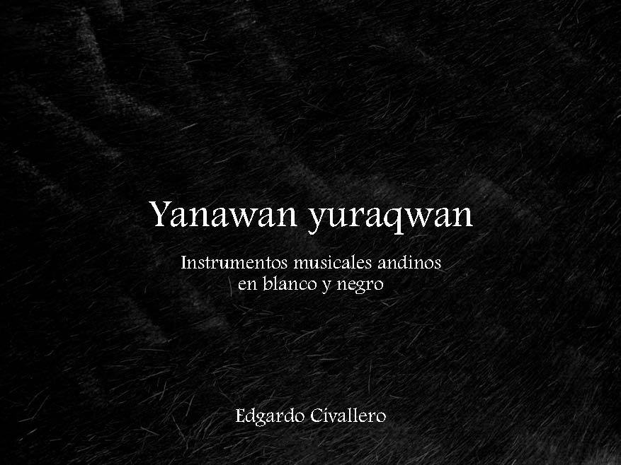

Yanawan yuraqwan. Instrumentos musicales andinos en blanco y negro
Inicio > Libros digitales sobre música > Yanawan yuraqwan. Instrumentos musicales andinos en blanco y negro
Cómo citar este trabajo: Civallero, Edgardo (2025). Yanawan yuraqwan. Instrumentos musicales andinos en blanco y negro. Edición de archivo. Bogotá: El Zorro de Abajo Editora.
Descargar en PDF.
Este libro (cuyo título, en quechua, significa "negro y blanco") es una obra fotográfica y textual dedicada a los instrumentos musicales tradicionales de los Andes, concebida como una reflexión visual sobre la materialidad del sonido y la memoria cultural. Realizado íntegramente en blanco y negro, el libro despoja al paisaje andino y a sus instrumentos de toda referencia cromática para reducirlos a luz, sombra, volumen y textura, revelando en sus superficies la historia acumulada de siglos de uso humano. La ausencia del color actúa como un método de descontextualización: sin el brillo cálido de la caña, el cuero o la madera, cada objeto se vuelve forma esencial, documento de presencia. Las fotografías no muestran música, pero la evocan; los aerófonos, cordófonos y membranófonos retratados parecen hablar con el silencio de sus grietas y sus huellas, narrando desde la quietud su vida sonora y comunitaria.
El texto que acompaña las imágenes introduce una mirada etnoorganológica que dialoga con la dimensión estética. Se reconstruye, en breves fragmentos, la genealogía material y cultural de los instrumentos andinos. A partir de los hallazgos arqueológicos, se rastrea la larga historia de los membranófonos e idiófonos que marcaron los ritmos sobre los que se desplegaron los aerófonos precolombinos —silbatos, flautas, bocinas, trompetas, ocarinas—, hasta la llegada de los cordófonos europeos que serían rápidamente absorbidos en el repertorio local. En las comunidades campesinas y urbanas que jalonan la cordillera, muchos de esos instrumentos continúan construyéndose y tocándose según cánones tradicionales, en los que confluyen rasgos indígenas e ibéricos, configurando un paisaje sonoro mestizo pero coherente.
El trabajo no es un catálogo, sino un ensayo visual y conceptual sobre la respiración del continente. Cada imagen es un documento y una metáfora: los instrumentos, arrancados al color, hablan a través de su materia; las cañas, maderas y cueros se vuelven huellas de memoria; los silencios, resonancia. Se propone así una arqueología del sonido a través de la luz: los Andes, despojados de estridencias y convertidos en escala de grises, se revelan como un gran pentagrama mineral donde cada grieta, cada sombra, cada cuerda tensa, sigue cantando.